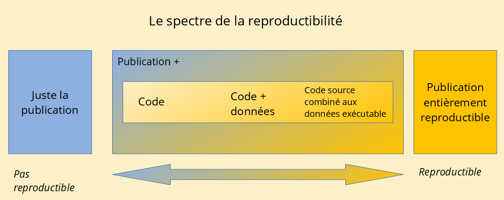

La notion de bonnes pratiques
- Origine : communauté des développeurs logiciels
- Constats :
- le “code est plus souvent lu qu’écrit” (Guido Van Rossum)
- la maintenance d’un code est très coûteuse
- Conséquence : un ensemble de règles informelles, conventionnellement acceptées comme produisant des logiciels fiables, évolutifs et maintenables
Pourquoi s’intéresser aux bonnes pratiques ?
L’activité du statisticien / datascientist tend à se rapprocher de celle du développeur :
- projets intenses en code
- projets collaboratifs et de grande envergure
- complexification des données et donc des infrastructures
- déploiement d’applications pour valoriser les analyses
Bonnes pratiques et reproductibilité

Source : Peng R., Reproducible Research in Computational Science, Science (2011)
- Une reproductibilité parfaite est coûteuse
Gitest un standard atteignable et efficient
Note
Quel socle de bonnes pratiques pour les projets statistiques en R ?